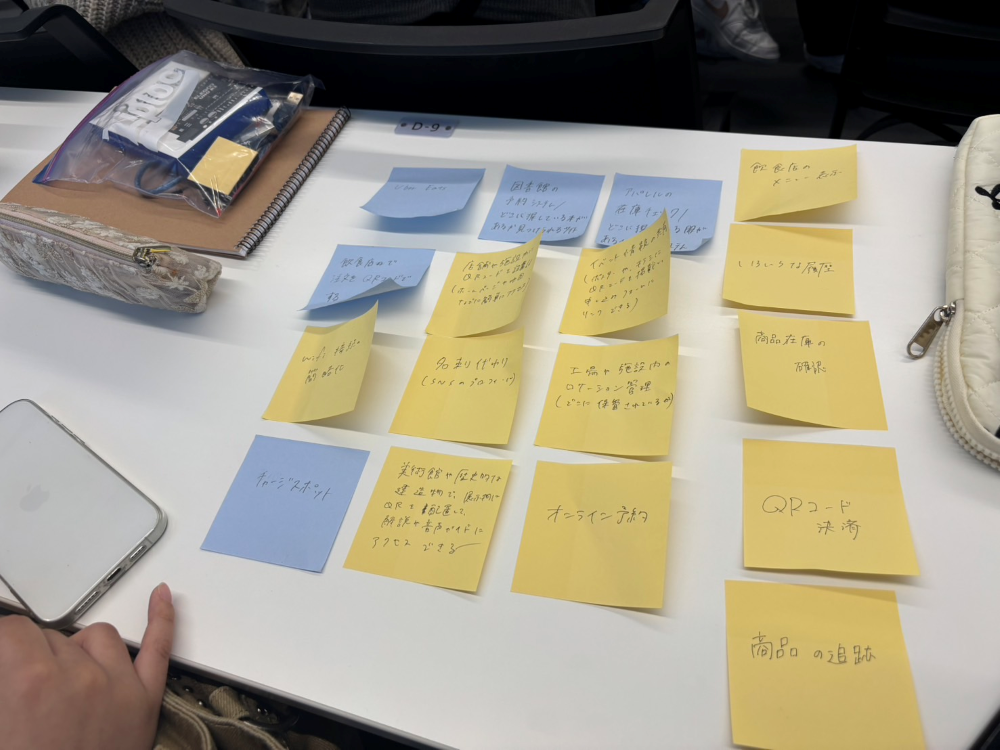

lot

lotでできるもの
・飲食店の料理状況
→QRコードを読み込んで頼んだ料理があとどれくらいで提供されるかを確認することができる
また、料理に含まれているアレルギー食材や、カロリーなども確認できる機能があると便利
・トイレの空き状況
→建物内にあるトイレの空き状況を確認できる
お腹が痛くて長時間利用したいときにこまなさそうなトイレを探すこともできたり、広いトイレを見つけることができる
lot実験動画はこちら↓
lot動画